Snow reports · Ski
Daily snow reports for skiers: where the snow is, what is coming and where to ski, from the SnowScope snow map and measuring stations. Every number comes from that day's data.
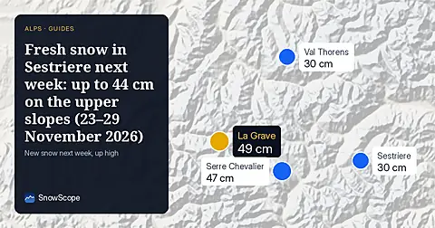
Sestriere snow forecast for 23–29 November 2026: 30 cm at the top (15–44 cm), 25 cm at the base, snowiest day Wednesday 25 November, with neighbours compared.

Madonna di Campiglio snow forecast for 23–29 November 2026: 27 cm at the top (8–46 cm), 23 cm at the base, snowiest day Wednesday 25 November, with neighbours compared.

Val Gardena snow forecast for 23–29 November 2026: 11 cm at the top (5–18 cm), 6 cm at the base, snowiest day Wednesday 25 November, with neighbours compared.

Next week's fresh snow in Cortina d'Ampezzo: 5–21 cm on the upper slopes and 0–1 cm at the base (23–29 November 2026), best day, best slopes and how sure the forecast is.

Livigno snow forecast for 23–29 November 2026: 19 cm at the top (6–31 cm), 16 cm at the base, snowiest day Wednesday 25 November, with neighbours compared.

Next week's fresh snow in Courmayeur: 8–44 cm on the upper slopes and 5–28 cm at the base (23–29 November 2026), best day, best slopes and how sure the forecast is.

Cervinia snow forecast for 23–29 November 2026: 23 cm at the top (6–41 cm), 19 cm at the base, snowiest day Thursday 26 November, with neighbours compared.

Saalbach snow forecast for 23–29 November 2026: 17 cm at the top (3–31 cm), 8 cm at the base, snowiest day Sunday 29 November, with neighbours compared.

Stubai Glacier snow forecast for 23–29 November 2026: 14 cm at the top (2–25 cm), 12 cm at the base, snowiest day Thursday 26 November, with neighbours compared.

Hintertux snow forecast for 23–29 November 2026: 14 cm at the top (3–24 cm), 12 cm at the base, snowiest day Wednesday 25 November, with neighbours compared.

Mayrhofen snow forecast for 23–29 November 2026: 17 cm at the top (2–31 cm), 1 cm at the base, snowiest day Sunday 29 November, with neighbours compared.
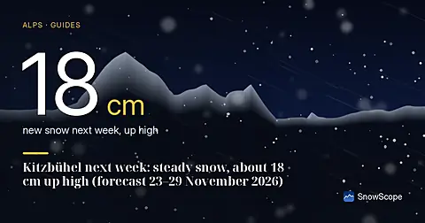
Next week's fresh snow in Kitzbühel: 3–34 cm on the upper slopes and 2–14 cm at the base (23–29 November 2026), best day, best slopes and how sure the forecast is.

Next week's fresh snow in Obergurgl: 3–23 cm on the upper slopes and 2–20 cm at the base (23–29 November 2026), best day, best slopes and how sure the forecast is.

Sölden snow forecast for 23–29 November 2026: 13 cm at the top (2–24 cm), 8 cm at the base, snowiest day Thursday 26 November, with neighbours compared.

Next week's fresh snow in Lech-Zürs: 7–53 cm on the upper slopes and 6–48 cm at the base (23–29 November 2026), best day, best slopes and how sure the forecast is.

Ischgl snow forecast for 23–29 November 2026: 18 cm at the top (3–34 cm), 14 cm at the base, snowiest day Thursday 26 November, with neighbours compared.

St. Anton snow forecast for 23–29 November 2026: 25 cm at the top (5–45 cm), 18 cm at the base, snowiest day Sunday 29 November, with neighbours compared.

Next week's fresh snow in Andermatt: 3–38 cm on the upper slopes and 3–28 cm at the base (23–29 November 2026), best day, best slopes and how sure the forecast is.

Next week's fresh snow in Saas-Fee: 6–37 cm on the upper slopes and 5–30 cm at the base (23–29 November 2026), best day, best slopes and how sure the forecast is.

Engelberg snow forecast for 23–29 November 2026: 22 cm at the top (2–42 cm), 7 cm at the base, snowiest day Thursday 26 November, with neighbours compared.

Next week's fresh snow in Laax: 4–38 cm on the upper slopes and 1–10 cm at the base (23–29 November 2026), best day, best slopes and how sure the forecast is.

Next week's fresh snow in Davos: 4–27 cm on the upper slopes and 2–8 cm at the base (23–29 November 2026), best day, best slopes and how sure the forecast is.
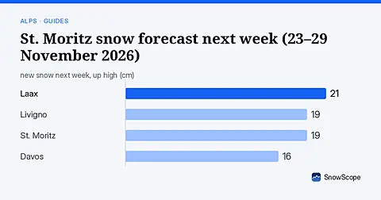
St. Moritz snow forecast for 23–29 November 2026: 19 cm at the top (5–33 cm), 16 cm at the base, snowiest day Wednesday 25 November, with neighbours compared.

Verbier snow forecast for 23–29 November 2026: 24 cm at the top (5–42 cm), 9 cm at the base, snowiest day Thursday 26 November, with neighbours compared.

Next week's fresh snow in Zermatt: 7–39 cm on the upper slopes and 4–27 cm at the base (23–29 November 2026), best day, best slopes and how sure the forecast is.

Next week's fresh snow in Megève: 9–46 cm on the upper slopes and 1–2 cm at the base (23–29 November 2026), best day, best slopes and how sure the forecast is.
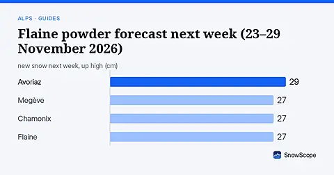
Next week's fresh snow in Flaine: 9–46 cm on the upper slopes and 8–45 cm at the base (23–29 November 2026), best day, best slopes and how sure the forecast is.

Avoriaz snow forecast for 23–29 November 2026: 29 cm at the top (9–48 cm), 17 cm at the base, snowiest day Wednesday 25 November, with neighbours compared.

Next week's fresh snow in Serre Chevalier: 25–68 cm on the upper slopes and 8–28 cm at the base (23–29 November 2026), best day, best slopes and how sure the forecast is.

Next week's fresh snow in La Grave: 23–74 cm on the upper slopes and 7–39 cm at the base (23–29 November 2026), best day, best slopes and how sure the forecast is.

Next week's fresh snow in Les 2 Alpes: 20–73 cm on the upper slopes and 4–22 cm at the base (23–29 November 2026), best day, best slopes and how sure the forecast is.

Alpe d'Huez snow forecast for 23–29 November 2026: 40 cm at the top (18–62 cm), 10 cm at the base, snowiest day Wednesday 25 November, with neighbours compared.

La Plagne snow forecast for 23–29 November 2026: 28 cm at the top (11–45 cm), 17 cm at the base, snowiest day Thursday 26 November, with neighbours compared.

Les Arcs snow forecast for 23–29 November 2026: 29 cm at the top (11–48 cm), 12 cm at the base, snowiest day Thursday 26 November, with neighbours compared.

Méribel snow forecast for 23–29 November 2026: 28 cm at the top (13–44 cm), 19 cm at the base, snowiest day Wednesday 25 November, with neighbours compared.

Next week's fresh snow in Courchevel: 12–42 cm on the upper slopes and 4–30 cm at the base (23–29 November 2026), best day, best slopes and how sure the forecast is.
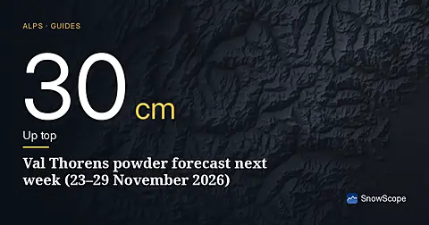
Next week's fresh snow in Val Thorens: 13–46 cm on the upper slopes and 11–39 cm at the base (23–29 November 2026), best day, best slopes and how sure the forecast is.
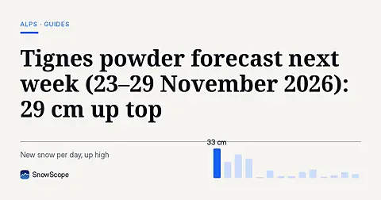
Next week's fresh snow in Tignes: 11–48 cm on the upper slopes and 8–38 cm at the base (23–29 November 2026), best day, best slopes and how sure the forecast is.

Val d'Isère snow forecast for 23–29 November 2026: 28 cm at the top (10–46 cm), 24 cm at the base, snowiest day Thursday 26 November, with neighbours compared.

Chamonix snow forecast for 23–29 November 2026: 27 cm at the top (8–46 cm), 14 cm at the base, snowiest day Wednesday 25 November, with neighbours compared.

Himos snow in mid-November 2026: the weather stations around Jämsä measured 0 to 2 cm on 13 November; the first-snow cross-country loop opens on 14 November, the slope opening date is not set yet. Rain risk this week and 46 past winters.

Lofsdalen snow report for mid-November 2026: the Häggberget station at 682 m measured 6 cm on 12 November, valley stations 7 to 8 cm on 13 November; about 7 cm more forecast with no rain, opening 11 December, 46 past winters.

Narvikfjellet snow conditions in mid-November 2026: Norway's national snow map shows about 50 cm at 1110 m and 35 cm at 844 m but almost none by the fjord; the nearest Swedish station at Katterjåkk measured 9 cm. Week ahead and 46 past winters.

Romme Alpin snow in mid-November 2026: Borlänge measured 4 cm, Ludvika 10 cm and Falun 0 cm on 13 November; rain this week; the season starts 19 December on made snow. What 46 past winters say about natural snow here.

Beitostølen snow conditions in mid-November 2026: about 10 to 13 cm across the whole area on Norway's national snow map, 10 cm more forecast this week with no rain, and how 46 past winters usually look at this high village.
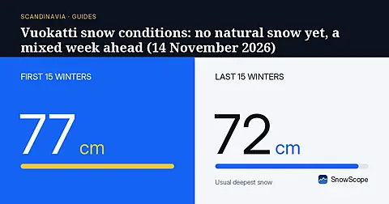
Vuokatti snow conditions in mid-November 2026: the stations at Sotkamo measured 0 cm on 13 November, Kajaani 1 cm; about 9 cm is forecast this week but some of it as rain; slopes aim to open 4 December. 46 past winters.

Branäs snow conditions in mid-November 2026: the Kindsjön station at 425 m measured 27 cm on 13 November, Letafors 17 cm, Östmark in the valley 0 cm. Rain risk this week, opening 11 December, 46 past winters.

Norefjell snow depth in mid-November 2026: Norway's national snow map jumped from about 4-5 cm to 15-20 cm overnight, with about 45 cm on the high plateau. The week ahead, rain risk low down, and 46 past winters.

Tahko snow depth in mid-November 2026: the slope season opened on 13 November with 2 of 14 lifts, on made snow; the stations around measured 0 cm after a short 2 to 4 cm cover melted. The week ahead and 46 past winters.

Funäsdalsfjällen snow in mid-November 2026: the station at Ljusnedal measured 7 cm on 13 November, Tänndalen is open on a small area, Ramundberget opens 19 December. Week ahead and 46 past winters at both resorts.

Myrkdalen snow depth in mid-November 2026: Norway's national snow map shows about 14 cm on the slopes and 33 cm at 1333 m; our forecast gives about 44 cm at the top in seven days. 46 past winters for late November.
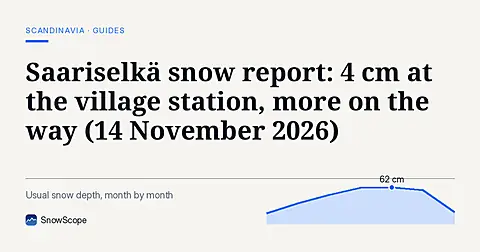
Saariselkä snow report for mid-November 2026: the weather station in Saariselkä measured 4 cm on 13 November, steady for a week; about 22 cm is forecast in seven days with no rain; slopes aim to open 21 November.

Riksgränsen and Björkliden snow report for mid-November 2026: the station at Katterjåkk measured 9 cm and Abisko 2 cm on 13 November, the week ahead, why the lifts open only in February, and 46 past winters.

Hafjell snow report for mid-November 2026: about 2 cm near the top and nothing at the bottom on Norway's national snow map, 9 cm forecast at the top this week with rain below, and how 46 past winters usually look in late November.

Pyhä-Luosto snow depth in mid-November 2026: weather stations around the fells measured 0 to 9 cm on 13 November, below normal; about 23 cm is forecast this week with no rain. Opening plans and 46 past winters.

Vemdalen snow conditions in mid-November 2026: Swedish weather stations around Vemdalsskalet and Björnrike measured 6 to 12 cm on 13 November after a snowy two days, about 8 cm more this week, opening plans and 46 past winters.

Voss snow forecast for mid-November 2026: Norway's national snow map shows about 20 cm at 1348 m and almost nothing in town, our forecast gives about 35 cm on top of Voss Resort over seven days with rain below about 600 m, plus 46 past winters.

Kläppen snow depth in mid-November 2026: the weather station in Sälen, 13 km away, measured 45 cm on 13 November after 11 cm the day before; the resort reports 25 cm. Rain risk this week, opening 11 December, 46 past winters.

Ylläs snow conditions in mid-November 2026: the weather stations around Ylläs measured 0 to 2 cm on 13 November, far below normal; about 23 cm of snow is forecast this week with no rain, and the slopes aim to open on 21 November.
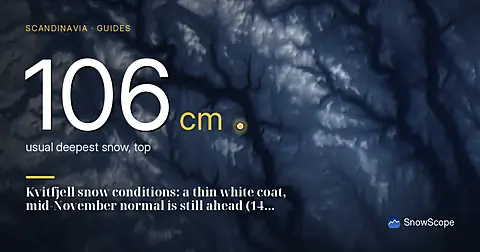
Kvitfjell snow conditions in mid-November 2026: about 5 cm on the upper slopes and 3 cm at the bottom on Norway's national snow map, roughly 10 cm forecast up high this week, and what 46 past winters say about late November and December.
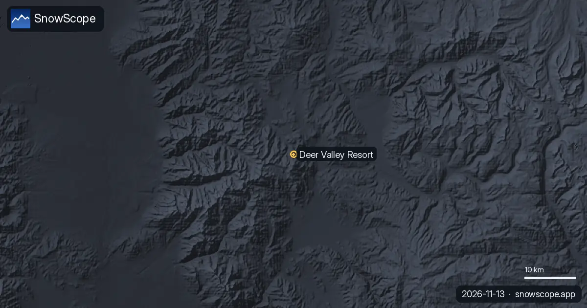
Deer Valley ski conditions on 13 November 2026: no real snow on the ground yet, about 4 in near the top from the weekend storm, rain on the low East Village side below about 6,700 to 7,600 ft, and 11 in up top over the week.

Park City, Utah snowfall forecast for 13 November 2026: almost no snow on the ground right now, about 5 in near the summit from the weekend storm with a snow level of 7,400 to 7,700 ft, rain at the base, and about 12 in up top over the week.

Alpental snow forecast for 13 November 2026: about 1 in on the upper mountain, rain almost to the summit this weekend with a snow level near 5,400 to 5,600 ft, then 4 to 5 in of mixed rain and snow up top next week.

Bogus Basin snow check for Boise skiers on 13 November 2026: no snow on the ground yet, rain and mixed snow this weekend with a snow level near 6,300 to 6,800 ft, then colder air and about 8 in at the summit by next week.

The Sillian (Hochpustertal) ski map with our snow layer on 13 November 2026: 8.6 cm on the top at 2399 m, bare lower slopes, and a week of mixed rain and snow with the snow line near 1,800 to 2,000 m.

Silvretta Montafon snow conditions on 13 November 2026: 4.5 cm on the top at 2421 m, bare mid-mountain and valley, about 40 cm on the way up high this week while the valley gets rain below 1,500 m.

Lech Zürs snow report for 13 November 2026: about 6 cm at the top (2436 m) and at mid-mountain, bare in Lech at 1430 m. This week 42 cm up high on our forecast, up to 91 cm on others, rain and snow mixed around 1400 m. And why Lech is the snowy side of the Arlberg.

Snow depth in St Anton am Arlberg on 13 November 2026: about 1 cm at the top (2642 m), 5 cm at mid-mountain, bare in the village. This week 42 cm at the top and 33 cm mid-mountain, rain below about 1480 m. How deep is deep enough for the steep runs.

Obergurgl snow report for 13 November 2026: about 20 cm at the top (3024 m), 5 cm at mid-mountain, bare at the lowest lifts (1784 m). Snow forecast for the week: 34 cm up high, 21 cm low down, snow line near 1700 m. Plus the usual early season.

Snow depth in Sölden on 13 November 2026: about 9 cm at the top (3245 m), 5 cm at mid-mountain, none in the valley at 1346 m. 25 cm forecast up high this week, rain below about 1620 m. Glacier vs village, with 46 past winters.

Snowfall in Val Thorens, 13 November 2026: 27 cm fell at the top (3175 m) and 17 cm at 2498 m over seven days; snow depth is 50 cm and 8 cm. Next seven days: 86 cm at the top, 73 cm at 2498 m, snow line well below the village. Usual snowfall season from 46 winters.
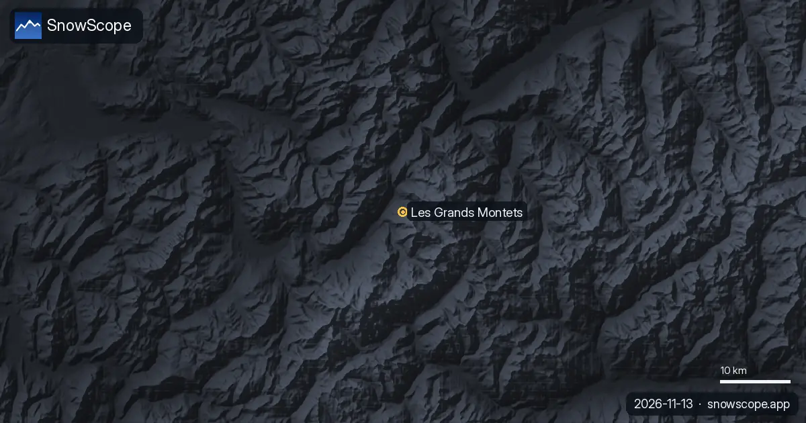
Snow depth in Chamonix on 13 November 2026, height by height: nothing on the valley floor, 1 cm at 2001 m, 12 cm at the top of Brévent-Flégère (2486 m), 5 to 24 cm at the top of the Grands Montets (2768 m). About a metre forecast up high this week, rain in the valley. How deep Chamonix usually gets, from 46 winters.

Snow depth in Ischgl on 13 November 2026: about 5 cm at the top (2868 m), 4 cm at mid-mountain, none in the valley at 1352 m. Up to 42 cm on the ridge this week, rain in the Paznaun below about 1570 m. Plus valley and ridge over 46 past winters.

Les Menuires snow report for 13 November 2026: 28 cm at the top (2838 m), none lying at 2112 m or 1386 m. About 80 cm due at the top in seven days, snow line around 1500 to 1700 m. Why Val Thorens, 450 m higher up the same valley, already has more.

Tignes snow conditions on 13 November 2026: 42 cm at the top (3447 m), 12 cm at 2503 m, a bare valley at 1559 m, and 99 cm forecast at the top over seven days, with rain below about 1700 m. How it compares with 46 past winters.

Purgatory Resort (Durango, Colorado) ski report from our snow model: 3 in (7 cm) at the summit, bare base and mid-mountain, 4 to 7 in of new snow forecast in the next seven days, and what a usual Purgatory winter looks like.

La Rosière snow conditions on our 11 November model run: 24 cm at the top (2799 m), bare mid-mountain and village, and a seven-day forecast of 108 cm at the top and 61 cm at mid-mountain. The sunny side of the Petit-Saint-Bernard in numbers.

Snow at Alpe Devero (Ossola, Piedmont) on our model: 2 cm at the top (2201 m), bare below, 36 cm of new snow forecast at the top in the next seven days. The small car-free resort and its usual winter in numbers.

Les Arcs snow report from our model: 34 cm at the top (3205 m), 2 cm at mid-mountain, a bare base, and up to 69 cm of new snow forecast at the top in the next seven days. What Les Arcs usually has in November and December.

Méribel snow conditions from our model on 11 November: 24 cm at the top (2920 m), 1 cm at mid-mountain, a bare valley, and a forecast of 99 cm at the top and 58 cm at mid-mountain over the next seven days. The usual Méribel winter in numbers.

The Isola 2000 ski map with today's snow: 9 cm at the top, 7 cm at mid-mountain, 2 cm at the base after 31 cm in a week, how the Pelevos, Saint-Sauveur and Lombarde sectors are laid out, and what a usual winter brings.

No snow yet at Oukaïmeden: 0 cm at all three heights, nothing in the last seven days, nothing in the coming week. What a usual November brings to the High Atlas and when to aim for skiing.

A slope map of Les Grands Montets and seven other ski areas shows how much of the ground is steeper than 30°, 35° and 40°, and why that line matters for avalanches.

A cheap 3-day Lake Como plan for December with real 2026-27 prices: trains, ferries, a funicular and a ski day at Piani di Bobbio or Madesimo, what you save compared with Cortina, and the chance of snow at Christmas.

Livigno's snow today, what the European seasonal forecast says about December, and why height beats a warm month at Christmas.

Snow today in Cortina, the European seasonal forecast for December and our chances of a white Christmas, mountain by mountain in the eastern Dolomites.

Where December 2026 looks snowier or leaner across the Dolomites, from Val Gardena to Cortina: the European seasonal forecast, our map and the chances of a white Christmas.

How much water the Atlas snow may hold in February 2027: the European seasonal forecast is about 3 °C warmer and wetter in the west and south, so snow odds stay low across Morocco's river basins.

The European seasonal forecast makes January 2027 about 2 °C warmer over the Atlas. Our outlook for snow depth, snow water and the water stored for Morocco's rivers.

Bou Iblane is still bare. The European seasonal forecast points to a clearly warmer December, and on every snowy part of the Middle Atlas our odds lean leaner.

Where December 2026 looks snowier or leaner from Montana to New Mexico: the European seasonal forecast and our map, mountain by mountain, with Colorado, Utah and the Northern Rockies.

Will the snowpack from the Écrins to the Maritime Alps and Piedmont fill as usual in December 2026? The European seasonal forecast and our map, mountain by mountain.
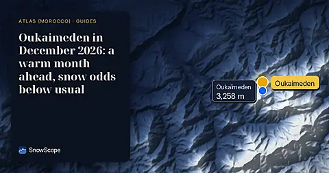
No snow yet at Oukaimeden. The European seasonal forecast sees a warmer December over the High Atlas, and our map shows leaner odds on almost every summit.

Snow today at the Grands Montets, the European seasonal forecast for December and our map of where December looks snowier or leaner around Mont Blanc.

One picture, 100 mountain ranges in the Alps, the Pyrenees, the Atlas and North America: Canada leads with 89% snow cover, the Alps reach 45%, the Atlas and the US Northeast are still bare.

We compared the SnowScope snow depth map with 2,012 measuring stations: RMSE 7.7 cm, bias -0.5 cm, snow or no snow right 88 % of the time. What works, what doesn't yet, and what we improve next.